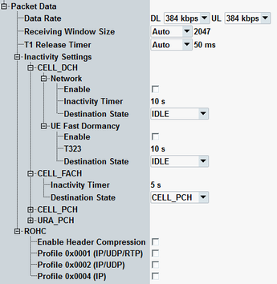
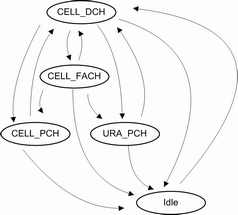

The parameters in this section are only relevant for end-to-end data connections, involving the data application unit (DAU).
To set up such a connection, see "End-to-End Packet Data Connections".

Data rates for the packet data connection in downlink and uplink direction.
The values HSDPA and HSUPA allow you to set up HSDPA, HSUPA, or combined HSDPA/HSUPA connections. Option R&S CMW-KS401 is required for these values.
Remote command:Size of the HSDPA receiver window in the UE, see 3GPP TS 25.321, section 11.6.2.3.
Select "Auto" for automatic configuration or select "Manual" and enter the value manually to the right.
Option R&S CMW-KS401 is required.
Remote command:Reordering release timer T1 value in ms. T1 controls the stall avoidance in the UE reordering buffer for HSDPA as described in 3GPP TS 25.321, section 11.6.2.3.
Select "Auto" for automatic configuration or select "Manual" and enter the value manually to the right.
Option R&S CMW-KS401 is required.
Remote command:Specifies the automatic RRC state transitions. RRC state transitions are monitored in "Event Log". The UE "RRC State" is displayed in "UE Info" area.
Option R&S CMW-KS410 is required.
Enables or disables the network-initiated automatic RRC state transitions of the UE for the originating states CELL_DCH, CELL_FACH, CELL_PCH and URA_PCH.
Remote command:Specifies the inactivity duration after which the network orders the change of UE RRC state. To use the timer, network-initiated automatic RRC state transitions must be enabled, see "Enable (Network)".
Remote command:Specifies the destination UE state for the network-initiated inactivity RRC state transitions. The default destination RRC state is idle. For the UE RRC states CELL_DCH, CELL_FACH, the destination RRC state is configurable. The following figure shows all possible RRC state transitions.

For a transition from idle to CELL_DCH, set up a PS connection.
If PDP context is activated in the idle state of the UE, test mode connection setup is not possible. To establish test mode, deactivate PDP context first.
Remote command:Specifies the UE fast dormancy of PS data connection introduced in Rel.8. Timer T323 specifies the inactivity duration after which the UE changes its RRC state by itself. When the timer expires, the UE changes its RRC state form CELL_DCH to the specified destination state. PDP context remains active even in idle mode, the IP address is kept.
UE fast dormancy can be enabled or disabled.
Remote command:Configures robust header compression (ROHC). Robust header compression is relevant for the continuous transfer of small packets, for example, for voice over IP. Here, the uncompressed header is typically bigger than the payload. Header compression reduces this overhead. ROHC performance testing is specified in 3GPP TS 25.323 and the references stated therein.
Enables up to two header compression profiles used by packet data convergence protocol (PDCP). Profiles are defined by IETF. If more than one enabled profile is compatible to the used protocols, the most specific profile is used. If no profile is compatible, no compression is performed.
Remote command:Defines which profiles are allowed to be used by the UE in uplink. In downlink, all profiles from the configuration tree are supported. Profiles are specified in IETF RFC 3095.
Remote command: